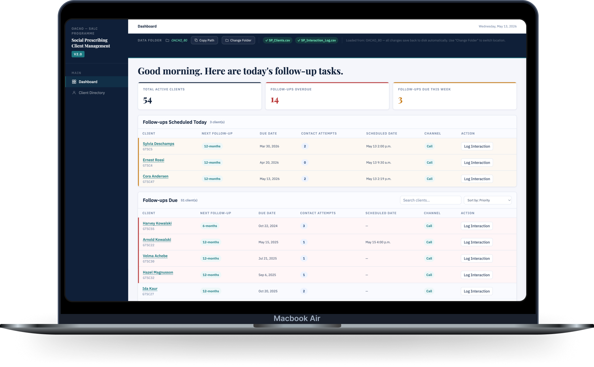
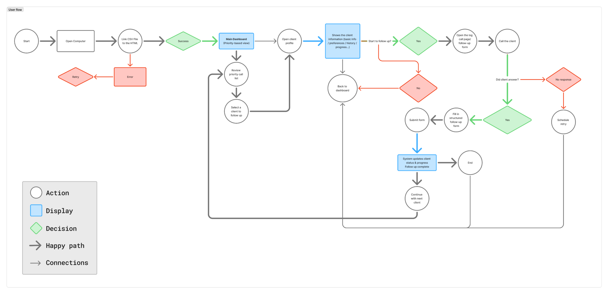

Link Workers needed to support older adults across 3/6/12-month follow-ups, but client context was scattered across spreadsheets, paper notes, call records, and staff memory.

LinkLog
Turning scattered follow-up records into a clearer client story for Link Workers.
LinkLog is a CSV-driven service management prototype for OACAO’s Links2Wellbeing social prescribing program. It helps Link Workers prepare for follow-ups, scan client context, document interactions, and preserve reporting continuity across 3/6/12-month support cycles.
Project Video
Watch the quick version.
This short project video introduces the social prescribing context, the follow-up problem, and how LinkLog changes the workflow from scattered records to a clearer support process.
Case Overview
A follow-up workflow problem, not just a data problem.
Make follow-up work visible, client history scannable, and interaction records consistent enough to support both relationship-based care and reporting.
We built a CSV-driven LinkLog prototype with a priority dashboard for due / overdue follow-ups, client profiles for longitudinal context, a structured Log Call workflow, and a legacy tracker converter for stakeholder review.
Service Context
Social prescribing depends on long-term relationship-based follow-up.
Links2Wellbeing connects older adults to community-based supports such as walking groups, chair yoga, coffee socials, art workshops, volunteer opportunities, and local programs. Link Workers do more than make referrals — they build relationships, understand barriers, and follow up over time.
Referral
→
Intake
→
Participation Plan
→
Program Connection
→
3-month Follow-up
→
6-month Follow-up
→
12-month Follow-up
The follow-up stage matters because staff need to understand whether the client participated, encountered barriers, felt more socially connected, or needs a new recommendation.
Inherited Research
Building on previous service research.
Previous teams had already mapped the broader social prescribing journey and identified data management, referral coordination, and follow-up tracking as major pain points. Our team used that foundation to narrow the next step: turning the LinkLog concept into a working follow-up prototype that could be reviewed with stakeholders.

Problem Reframing
The issue was not simply missing data.
OACAO was not receiving enough data from SALCs.
Follow-up context existed, but it was fragmented across local trackers, call notes, paper records, staff intuition, and inconsistent reporting formats.
How might we help Link Workers prepare, document, and continue follow-ups without losing the client’s longitudinal story?
The goal was not to collect more data. It was to make existing context easier to use during real service coordination.
Scope Decision
We narrowed the project to one high-value operational touchpoint.
With only four weeks, we chose not to redesign the entire social prescribing ecosystem. I pushed the team to focus on the follow-up and log-call workflow because it was a concrete, high-value touchpoint: staff needed to know who to call, what happened last time, what changed for the client, and what needed to happen next.
Why this mattered:
A focused log-call workflow could reduce admin burden, support better client continuity, and create cleaner data for reporting without requiring a full CRM.
Collaboration
A team project shaped through shared service reasoning.
Our team worked collaboratively across research synthesis, blueprinting, workflow definition, usability testing, and stakeholder presentation. Because the final coded prototype could not be built collaboratively in real time, one teammate implemented it while the rest of us reviewed workflows, identified issues, and proposed changes.
My specific contributions
- Helped narrow the project scope toward follow-up and Log Call instead of trying to solve the entire service ecosystem.
- Contributed to mid-fidelity Log Call workflow thinking that informed the final Log Call interface.
- Supported feasibility and implementation planning around lightweight CSV-based adoption.
- Reviewed prototype behavior and raised design issues for iteration.
- Contributed to storyboard and presentation narrative.
Service Design Process
Mapping the backstage work behind the interface.
01 · Understand the current service
Follow-up work was scattered across tools and memory.
The current-state blueprint showed how follow-up work was distributed across paper records, spreadsheets, phone notes, reporting requirements, and worker memory. This helped us understand that the interface problem was actually a backstage coordination problem.

02 · Translate service pain points into workflow
Service pain points became concrete product behavior.
The future-state blueprint and user flow translated service pain points into product behavior: import local data, review priority follow-ups, scan client context, decide whether to start a follow-up, log the interaction, and update the record.


03 · Communicate the intended staff experience
The storyboard kept the workflow grounded in a real follow-up day.
The storyboard helped ground the workflow in a real follow-up day: a Link Worker prepares for calls, reviews client context, speaks with an older adult, documents the interaction, and decides the next step.

Design Goals
What LinkLog needed to support.
Surface priority follow-ups
Help staff see overdue, scheduled, and upcoming follow-ups without rebuilding task lists manually.
Make client context scannable
Bring programs, barriers, preferences, contact history, and follow-up stage into one client profile.
Support relationship-based logging
Document call outcomes, barriers, participation changes, concerns, recommendations, and next actions.
Preserve reporting continuity
Keep records consistent across dashboard, profile, interaction log, and CSV export.
Solution Highlights
A lightweight prototype for daily follow-up coordination.
Dashboard Prioritization
Shows today’s follow-ups, overdue clients, scheduled calls, and contact attempts so Link Workers can start with the highest-priority work.
Client Profile Context
Collects client details, program history, barriers, preferences, follow-up stage, and previous interactions so staff can prepare before contacting the client.
Log Call Workflow
Guides staff through connected calls, missed calls, rescheduling, discontinued participation, participation updates, barriers, recommendations, and next actions.
CSV / Legacy Tracker Conversion
Maps existing spreadsheet data into a structure the prototype can read, reducing adoption friction for organizations that already rely on Excel or Google Sheets.
Testing & Iteration
Usability testing helped us tighten the follow-up workflow.
Dashboard Prioritization
- Finding
- Participants were confused by priority logic, due date vs scheduled date, and which clients required immediate attention.
- Change
- Added priority indicators, sorting/filtering by priority, name, due date, and contact attempts. Client names were underlined to better indicate clickable navigation.
- Why it mattered
- The dashboard became a task coordination tool, not just a list of clients.
Longitudinal Timeline
- Finding
- Participants struggled to understand completed stages, progression over time, and discontinued participation.
- Change
- Added completed-state checkmarks, clearer progression hierarchy, and a dedicated discontinuation state that visually stops the timeline.
- Why it mattered
- Staff could understand whether a client was active, progressing, interrupted, or discontinued.
Interaction Logging
- Finding
- Participants found the logging workflow visually overwhelming and were confused by outcome terminology and reporting logic.
- Change
- Renamed “Complete” to “Connect,” added follow-up fields, improved outcome terminology, and preserved entered data when “Discontinue” was selected.
- Why it mattered
- The form better matched relationship-based care interactions and reduced accidental data loss.
Context + Reporting Continuity
- Finding
- Participants struggled to locate client context and expected stronger consistency between dashboard, profile, and interaction views.
- Change
- Reorganized profile hierarchy, clarified labels/statuses, aligned data structures across views, and redesigned CSV output into a more readable operational format.
- Why it mattered
- Client context became easier to scan and more useful for long-term coordination and reporting.
Selected prototype evolution
These process snapshots show how the dashboard, client profile, and Log Call workflow changed as the team translated service pain points into a clearer follow-up tool.
Dashboard Evolution

The dashboard moved from a general follow-up list toward a priority-based view that surfaces due / overdue clients, scheduled calls, contact attempts, and clear next actions.
Client Profile Evolution

The client profile evolved from scattered client details into a scannable longitudinal view with participation history, barriers, contact context, follow-up status, and interaction records.
Log Call Evolution

The Log Call workflow became more structured around real follow-up outcomes: connected calls, missed calls, rescheduling, discontinuation, barriers, recommendations, and next steps.
Implementation Strategy
Designed for low-cost adoption, not enterprise overhead.
LinkLog was designed as a local browser-based prototype that reads structured CSV files. This made it realistic for SALCs that already rely on Excel or Google Sheets and may not have dedicated IT support. If OACAO continues the concept, the same front-end logic could later be hosted online or connected to a database-backed system.
Runs in a browser using structured CSV files, reducing the need for new subscriptions or heavy infrastructure.
Existing Google Sheet / Excel trackers can be converted into a LinkLog-ready CSV structure.
The design respects the reality that many SALCs do not have dedicated IT support.
If OACAO chooses to continue the concept, the interface could later be hosted online or redirected to a database-backed system.
This was presented as a stakeholder-review prototype, not a confirmed production launch.
The client responded most strongly to implementation realism.
During the final stakeholder presentation, the client responded positively to the prototype because it addressed a practical implementation problem: their existing Google Sheet / CSV data did not always import cleanly, and the LinkLog converter showed how legacy records could be made usable inside a clearer interface.
They also responded strongly to the Log Call workflow because it focused on the moment staff actually need support: preparing for a follow-up, recording what happened, and deciding what should happen next.
What stakeholders valued
- The local CSV / Google Sheet conversion approach addressed a realistic data compatibility problem.
- The Log Call workflow directly supported the moment staff needed help most: preparing, documenting, and deciding what happens next.
- The lightweight implementation path felt more realistic than a heavy CRM-style system.
Prototype review note:
This feedback came from stakeholder review during the final presentation. It should be framed as qualitative validation, not measured operational impact or confirmed deployment.
Reflection
What this project taught me about service design.
From interface thinking to service thinking
Before this project, I mostly approached design through screens, flows, and usability issues. LinkLog pushed me to look further backstage. The friction was not only inside the interface — it came from fragmented records, inconsistent follow-up routines, reporting pressure, and worker memory holding the service together.
Designing with operational reality
This project taught me that a useful service tool has to fit the organization’s real constraints. A polished CRM-style concept would have been unrealistic for small SALCs with limited funding and no dedicated IT support. That is why our prototype stayed lightweight: local files, CSV import, readable records, and a workflow staff could understand without major training.
Supporting care without over-structuring it
The hardest part was balancing structure with relationship-based work. Link Workers are not just collecting data; they are checking in on older adults, listening for barriers, and deciding what support makes sense next. Good service design should reduce administrative load without turning human care into a rigid form-filling exercise.
What I would do next
If this project continued, I would test the prototype with more Link Workers in real follow-up scenarios, compare how long it takes to prepare for a call before and after LinkLog, and refine the reporting fields with OACAO so the data stays useful without becoming extra work for staff.